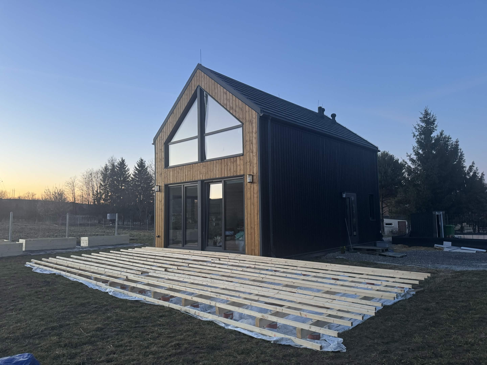
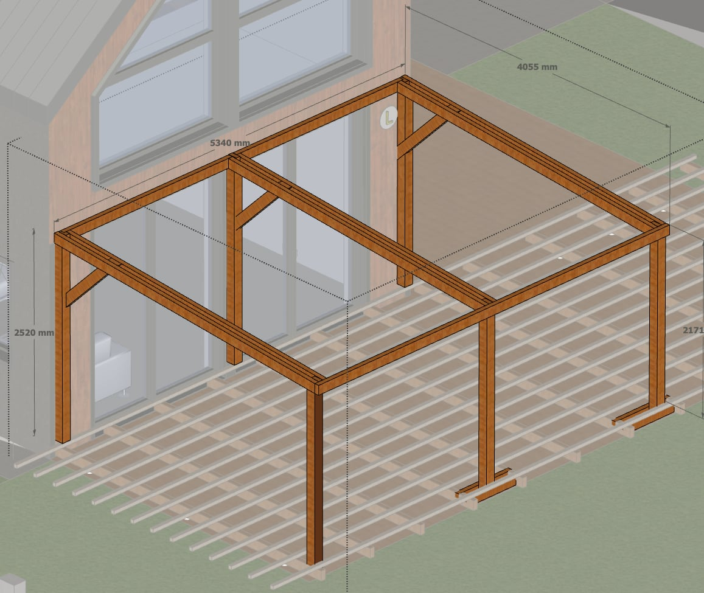
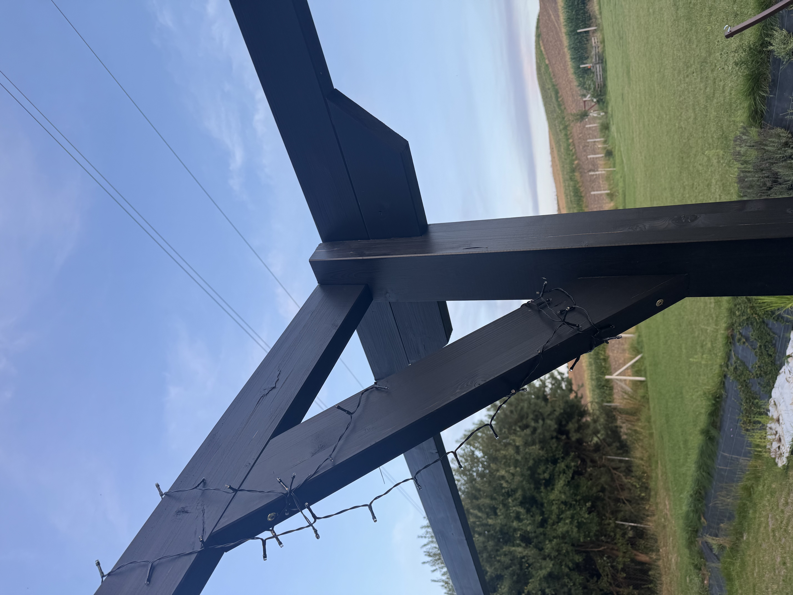
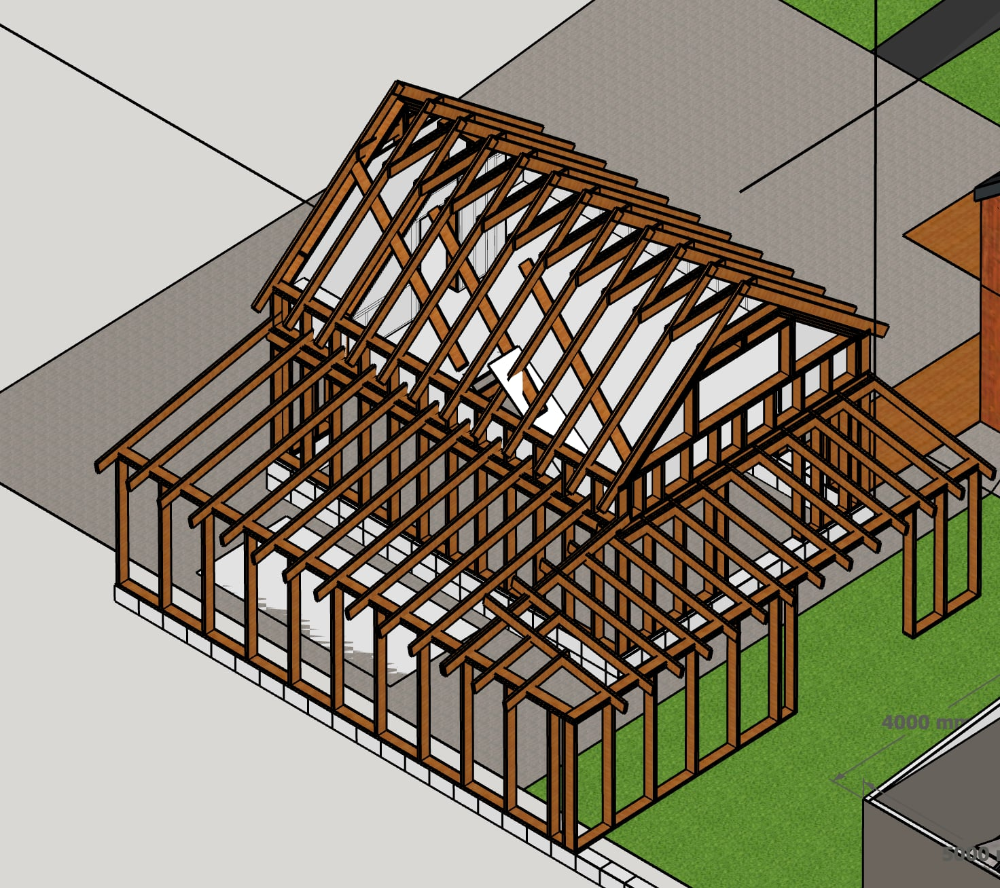
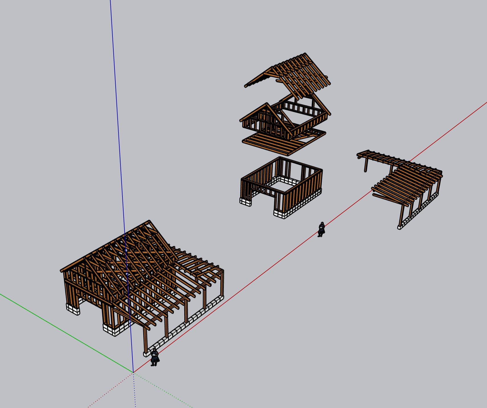
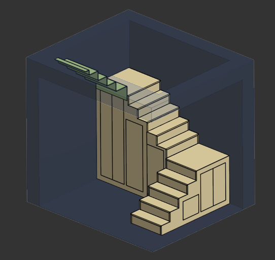
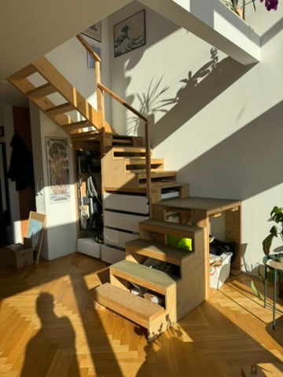

Projekty własne
Inżynieria to dla mnie nie tylko praca, ale też sposób patrzenia na codzienne problemy. Lubię rozkładać rzeczy na części, szukać rozwiązań i przede wszystkim uczyć się przez działanie.
Wszystkie poniższe projekty były dla mnie czymś zupełnie nowym. Niektóre z nich to duże i kosztowne przedsięwzięcia, dlatego każdy zaczynałem od researchu, zdobywania wiedzy i projektowania, a kończyłem na fizycznej realizacji.
Nie boję się tematów, których jeszcze nie znam. Wręcz przeciwnie, właśnie takie wyzwania najbardziej mnie interesują. Największą satysfakcję daje mi moment, w którym „nie wiem, jak to zrobić” zamienia się w „działa”.
Jeżeli chcesz dowiedzieć się więcej o moich projektach hobbystycznych, zapraszam do kontaktu. Nie są to projekty komercyjne, ale raczej eksperymenty. Chętnie podzielę się doświadczeniem i wiedzą oraz wesprę Was przy Waszych własnych projektach. Potrzebujesz planów? Odezwij się!
Taras z pergolą
Projekt tarasu z pergolą, który ma na celu stworzenie przyjemnej przestrzeni do wypoczynku i spotkań towarzyskich. Projekt rozpocząłem bez wcześniejszego doświadczenia w tego typu konstrukcjach. Od podstaw przeanalizowałem dostępne rozwiązania konstrukcyjne, materiały, sposoby kotwienia oraz wymagania dotyczące wykonania tarasu i pergoli. Na podstawie zebranego know-how przygotowałem model 3D całej konstrukcji, a następnie zrealizowałem projekt.



Taras został wykonany z drewna konstrukcyjnego C24 na podwójnym legarze świerkowym. Pierwsza warstwa legarów o przekroju 45 × 120 mm została osadzona na metalowych kotwach umieszczonych w betonowych fundamentach, co pozwoliło na stabilne i trwałe osadzenie konstrukcji przy jednoczesnej łatwości uzyskania odpowiedniego spadku (zakładane 2% w kierunku odwodnienia, regulowane na nakrętkach M12). Druga warstwa legarów o przekroju 45 × 45 mm została zastosowana w celu usztywnienia konstrukcji i zapewnienia odpowiedniego podparcia dla desek tarasowych.
Zdecydowałem się na montaż desek tarasowych przy użyciu niewidocznego systemu, który pełni również funkcję dylatacji i wentylacji. Deski tarasowe wykonane są z drewna tali, które jest odporne na warunki atmosferyczne i charakteryzuje się wysoką trwałością. Pergola została zaprojektowana z myślą o estetyce i funkcjonalności. Konstrukcja pergoli wykonana jest z drewna klejonego warstwowo klasy B24, co zapewnia jej wytrzymałość, stabilność oraz wysoką estetykę. Pergola została zaprojektowana w taki sposób, aby umożliwić montaż rolet rzymskich, które zostaną zainstalowane, jak tylko znajdę na to czas.



Po wykonaniu całej konstrukcji poprosiłem profesjonalne firmy o wycenę wykonania tarasu i pergoli z tożsamych materiałów. Całość prac wyceniono na 50 000–60 000 PLN. Wykonując projekt samodzielnie, zamknąłem się w kwocie 15 000 PLN, wliczając w to zakup materiałów, narzędzi i akcesoriów montażowych. Wartość mojego czasu nie została uwzględniona w kosztach, ponieważ projekt był realizowany hobbystycznie i z pasji do majsterkowania. Na ostatnich zdjęciach można zauważyć pewne braki — jak to przy każdym projekcie DIY, kiedyś zostaną uzupełnione...
Piętrowy budynek w technologii szkieletowej o powierzchni zabudowy 38 m²
Projekt budynku w technologii szkieletowej o powierzchni zabudowy 38 m². Budynek został zaprojektowany z myślą o maksymalnym wykorzystaniu przestrzeni przy jednoczesnym zachowaniu estetyki i funkcjonalności. Konstrukcja szkieletowa pozwala na szybkie i efektywne wznoszenie budynku. Budynek jest na etapie projektowym, wykonanie planuję na IV kwartał 2026 roku.


Ogród warzywny z półautomatycznym systemem nawadniania
Z ogrodnictwem i systemami nawadniania wcześniej praktycznie nie miałem nic wspólnego. Zacząłem więc od researchu — sprawdziłem, czego potrzebują poszczególne rośliny, jak zaprojektować instalację i jakie rozwiązania pozwolą ograniczyć codzienną obsługę ogrodu. Następnie zaprojektowałem układ ogrodu i całego systemu, przygotowałem modele 3D, dobrałem komponenty i zbudowałem działające rozwiązanie, które automatyzuje znaczną część procesu podlewania. Obecnie wystarczy podpiąć zasilanie wodne do systemu nawadniania i przekręcić parę pokręteł. Półautomatyczny system udało mi się zamknąć w budżecie 300 PLN.


Modułowe schody z przestrzenią magazynową
Dom, który wybudowałem, ma ograniczone miejsce do przechowywania, dlatego zależało mi na tym, aby schody prowadzące na piętro były nie tylko funkcjonalne, ale również pozwalały na przechowywanie rzeczy. Rynek szybko mnie zweryfikował — nie byłem w stanie znaleźć żadnego wykonawcy, który wykona konstrukcję schodów z przestrzenią magazynową. Każdy wykonawca odsyłał mnie do stolarza, który zrobiłby dodatkową zabudowę. Nie chciałem płacić dwukrotnie za te same usługi, dlatego schody zrobiłem sam. W swoim projekcie postawiłem na odpady po budowie domu szkieletowego, dzięki czemu udało się go zrealizować w budżecie 700 PLN.
Na dzień dzisiejszy schody są w pełni funkcjonalne dzięki zastosowaniu dużych szuflad o udźwigu 120 kg oraz sprytnemu dostępowi do zakamarków konstrukcji. Wykonałem je modułowo w warsztacie u wujka, a następnie umieściłem w odpowiednim miejscu — tak było mi prościej. W przyszłości planuję dodać szufladę na buty pod każdym możliwym stopniem oraz obicie ze sklejki. Niestety, jak to bywa przy projektach DIY, czas to największy przeciwnik, dlatego schody czekają w stanie surowym z tymczasowymi stopniami z płyty OSB. Zakończenie projektu planuję na IV kwartał 2026 roku.


| Projekt | PRJ-001 |
|---|---|
| Klient | Projekty własne |
| Okres | 2026 |
| Rola |